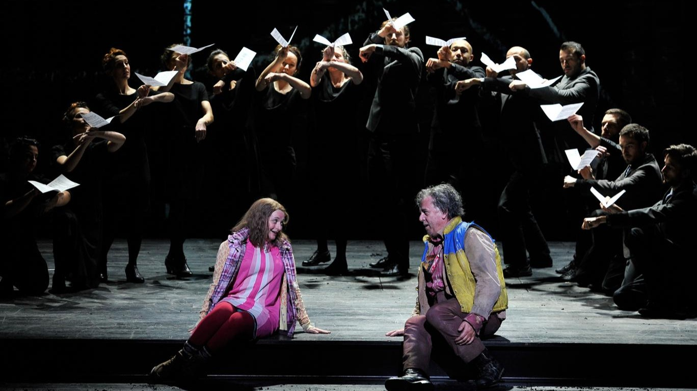
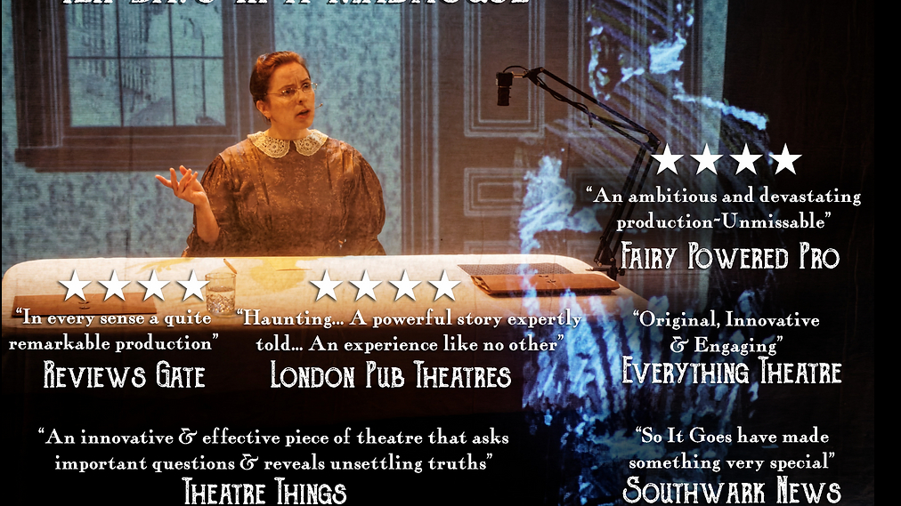
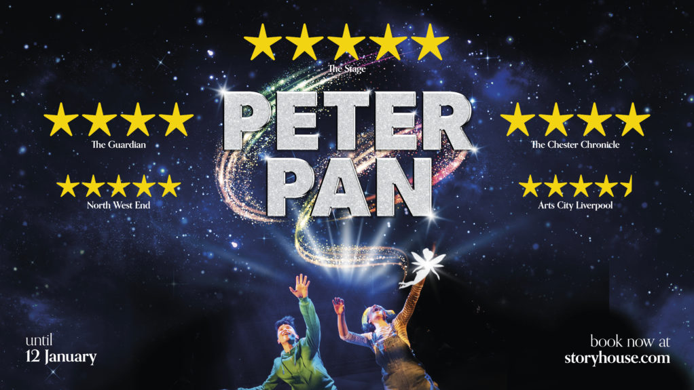
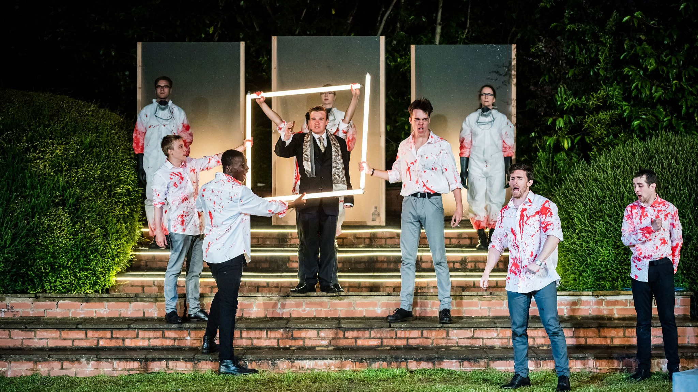

1 / 10

Doctor Who: Time Fracture
Dr. Yates, Time Lord Guide, Cover Tepesh, Cover Lamalldir. Tom Maller & Fiona Kingswill
Immersive LDN | Hartshorn Hook
Apr 2022 - Sept 2022
2 / 10

The Magic Flute
Physical Performer | PuppeteerSimon McBurney
Complicite
English National Opera (2016; 2019) | Bergen National Opera (2022)
3 / 10
Ten Days In A Madhouse
Movement DirectorDir. Douglas Baker
So It Goes Theatre | Jack Studio Theatre
June 2022
4 / 10

Made From Love
HeCo-Creator & Co-Director
Artistic Rebellion | Camden People's Theatre | Fertility Fest
Jan 2020
5 / 10

Peter Pan
Smee | Slightly | Puppeteer | Movement CaptainDir. Martin Constantine
Chester Storyhouse
Nov 2019 - Jan 2020
6 / 10
Keats 200
John KeatsDir. Andrew Ashmore
Keats House | Keats Foundation
Dec 2018 - Present
7 / 10
Fatal Eggs
Movement DirectorDir. Douglas Baker
So It Goes Theatre | Barons Court Theatre
Apr 2019
8 / 10

Macbeth
Movement DirectorDir. Courtney Larkin
Pendley Shakespeare Festival
Aug 2019
9 / 10
Maklena
ZbrozhekDir. Maria Montague
Arabeksy Teatr, Kharkiv | Moloddy Teatr, Kyiv | Camden People's Theatre
June 2019
10 / 10

Moby Dick
Movement DirectorDir. Douglas Baker
So It Goes Theatre | Jack Studio Theatre
October 2019